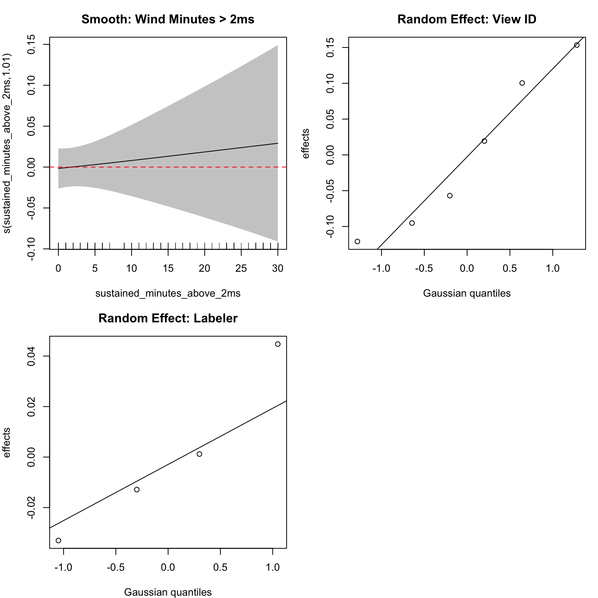
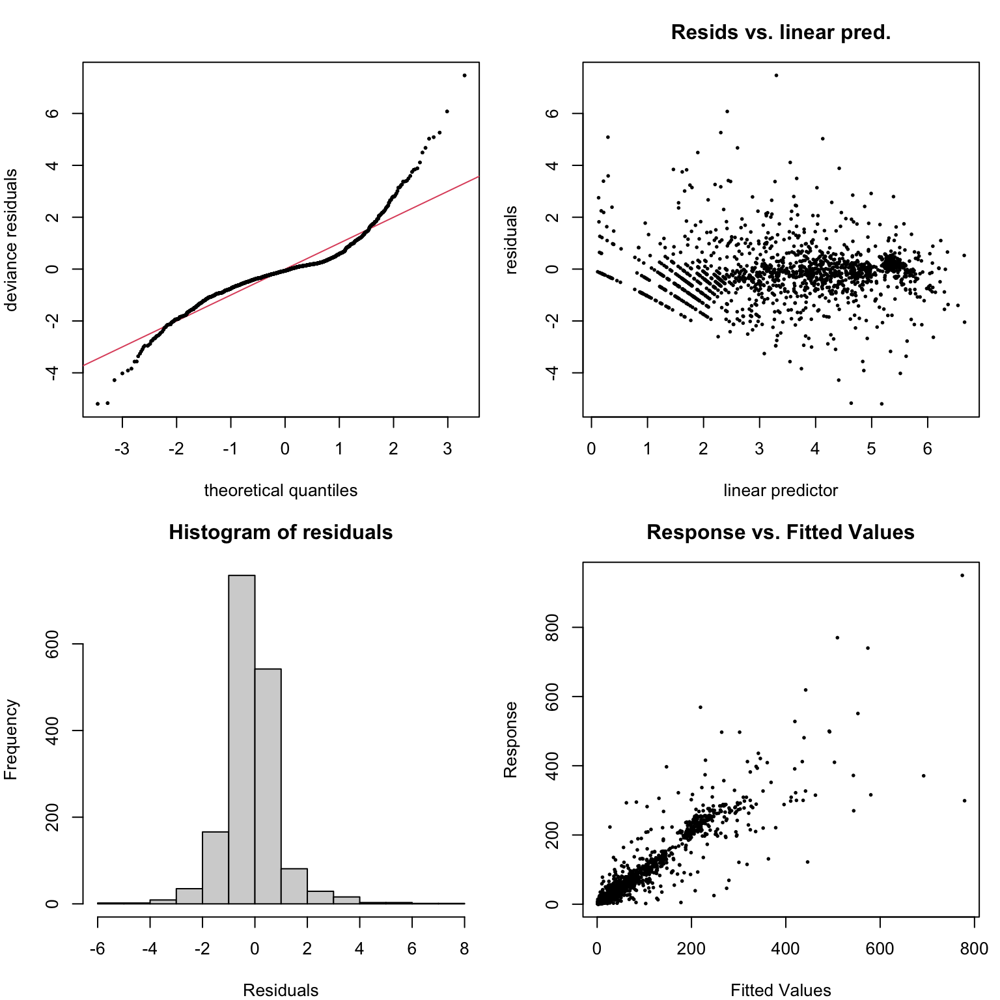
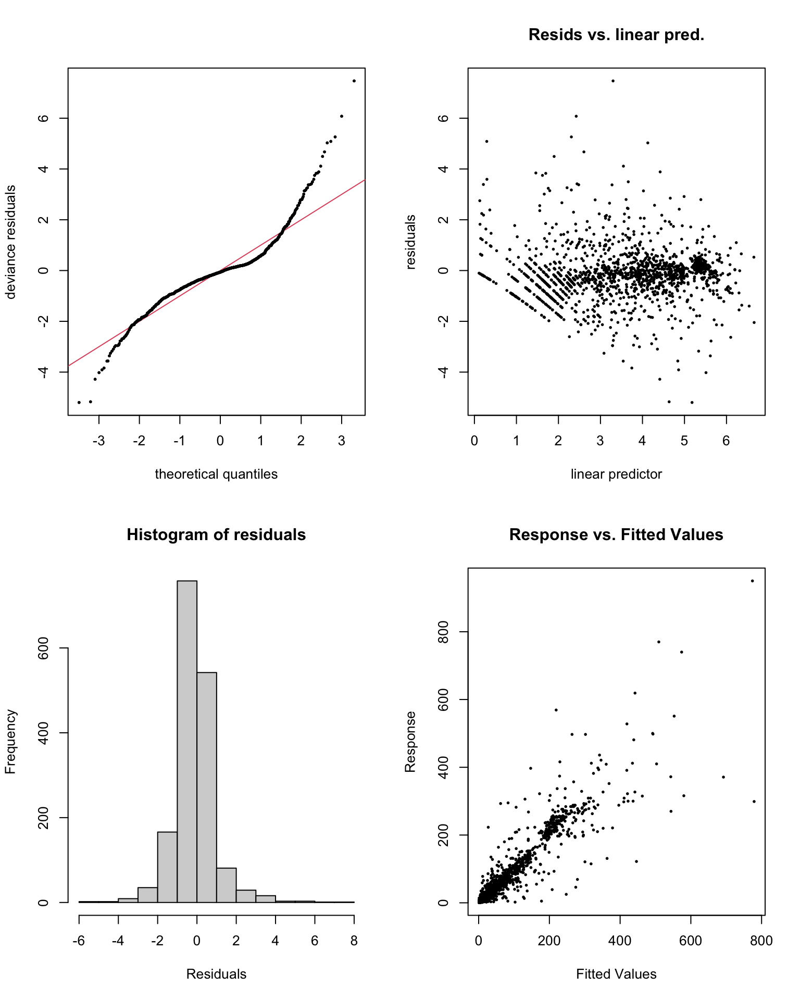

Testing Dose-Response Relationships in Monarch Wind Sensitivity
Author
Kyle Nessen
Published
August 11, 2025
1 Executive Summary
This analysis tests Hypothesis 3: that wind effects on monarch butterfly abundance scale with wind intensity, following a dose-response relationship. Building on H1 and H2 findings of minimal wind effects, we examine whether wind impacts might be non-linear, threshold-dependent, or detectable only at extreme intensities using multiple analytical approaches including polynomial models, GAMs, and threshold sensitivity analysis.
Key Finding: We find no evidence of meaningful dose-response relationships between wind intensity and monarch abundance. Neither linear scaling, non-linear relationships, nor alternative threshold values reveal significant wind effects. This reinforces conclusions from H1 and H2 that monarchs exhibit remarkable resilience to wind exposure at the scales measured.
2 Introduction
2.1 Research Question
Do wind effects on monarch butterfly abundance increase proportionally with wind intensity, showing dose-response relationships that might be missed by simple threshold or linear approaches?
2.2 H3 in the Hypothesis Hierarchy
H1: Wind speeds exceeding 2 m/s disrupt monarch clustering → No support
H2: Wind acts as a disruptive force on monarch abundance → No support
H3: Wind effects scale with intensity (this analysis)
H4: Wind magnitude influences roost abandonment probability
H5: Disruptive wind events affect long-term site fidelity
2.3 Rationale for H3
The lack of support for H1 and H2 doesn’t preclude dose-response relationships because:
Non-linear effects: Wind impacts might only appear at high intensities
Threshold heterogeneity: Different sites or conditions might have different critical thresholds
Interaction effects: Wind effects might depend on temperature or other factors
Cumulative exposure: Effects might depend on total wind exposure rather than peak values
2.4 Analytical Approaches for H3
Polynomial models: Test quadratic, cubic relationships
# Fit GAM with smooth wind term# Note: Using negative binomial family in mgcv# Convert categorical variables to factors for GAMdf_gam <- df %>%mutate(view_id =as.factor(view_id),labeler =as.factor(labeler) )m3_gam <-gam( abundance_index_t ~ log_lag_abundance +s(sustained_minutes_above_2ms, k =8) +# Smooth wind term (reduced k) temp_std + sun_std +s(view_id, bs ="re") +# Random effect as smooths(labeler, bs ="re"), # Random effect as smoothdata = df_gam,family =nb(), # Negative binomialmethod ="REML")# Model summarysummary(m3_gam)
# Check if smooth term is significantwind_smooth_p <-summary(m3_gam)$s.table["s(sustained_minutes_above_2ms)", "p-value"]cat("Wind smooth term p-value:", round(wind_smooth_p, 4))
Wind smooth term p-value: 0.6355
Show code
# Plot GAM smooth termspar(mfrow =c(2, 2), mar =c(4, 4, 3, 1))# Wind smoothplot(m3_gam, select =1, main ="Smooth: Wind Minutes > 2ms",shade =TRUE, seWithMean =TRUE)abline(h =0, lty =2, col ="red")# Random effectsplot(m3_gam, select =2, main ="Random Effect: View ID")plot(m3_gam, select =3, main ="Random Effect: Labeler")# Residualsgam.check(m3_gam, pch =19, cex =0.3)

GAM smooth functions for H3 analysis

GAM smooth functions for H3 analysis
Method: REML Optimizer: outer newton
full convergence after 4 iterations.
Gradient range [-0.002416074,1.331062e-05]
(score 6984.256 & scale 1).
Hessian positive definite, eigenvalue range [0.002398717,489.3647].
Model rank = 21 / 21
Basis dimension (k) checking results. Low p-value (k-index<1) may
indicate that k is too low, especially if edf is close to k'.
k' edf k-index p-value
s(sustained_minutes_above_2ms) 7.00 1.01 1.02 0.94
s(view_id) 6.00 3.56 NA NA
s(labeler) 4.00 1.64 NA NA
if (inherits(best_h3_model, "gam")) {# GAM diagnosticspar(mfrow =c(2, 2))gam.check(best_h3_model, pch =19, cex =0.3)} else {# glmmTMB diagnostics sim_res_h3 <-simulateResiduals(best_h3_model, n =1000)par(mfrow =c(2, 2))plot(sim_res_h3, main ="H3 Q-Q Plot")plotResiduals(sim_res_h3, form =fitted(best_h3_model), main ="H3 Residuals vs Fitted")plotResiduals(sim_res_h3, form = df$sustained_minutes_above_2ms,main ="Residuals vs Wind Minutes")testDispersion(sim_res_h3)}

Diagnostic plots for H3 best model
Method: REML Optimizer: outer newton
full convergence after 4 iterations.
Gradient range [-0.002416074,1.331062e-05]
(score 6984.256 & scale 1).
Hessian positive definite, eigenvalue range [0.002398717,489.3647].
Model rank = 21 / 21
Basis dimension (k) checking results. Low p-value (k-index<1) may
indicate that k is too low, especially if edf is close to k'.
k' edf k-index p-value
s(sustained_minutes_above_2ms) 7.00 1.01 1.02 0.97
s(view_id) 6.00 3.56 NA NA
s(labeler) 4.00 1.64 NA NA
8 Discussion
8.1 H3 Summary of Findings
Show code
# Summarize key findings from each approachcat("H3 Analysis Summary:\n")
H3 Analysis Summary:
Show code
cat("Best performing model:", best_h3_name, "\n")
Best performing model: GAM
Show code
cat("Best model AIC:", round(model_comparison_h3$AIC[1], 2), "\n")
Poor model improvement: Complex models didn’t substantially improve on simple linear approaches
Robust null finding: Results consistent regardless of analytical strategy
8.2 Biological Implications
The lack of dose-response relationships suggests:
Threshold independence: Monarch responses don’t follow simple threshold models at any wind speed
Non-linear resilience: If thresholds exist, they’re beyond the range of our data (~5 m/s max)
Behavioral buffering: Monarchs may actively adjust to wind conditions without changing roost abundance
Scale misalignment: Important wind effects may occur at spatial/temporal scales not captured
8.3 H3 in Context of H1 and H2
The consistent null findings across H1, H2, and H3 create a coherent picture:
H1: No support for 2 m/s threshold → Confirmed robust
H2: No general wind disruption effects → Confirmed robust
H3: No intensity scaling relationships → Confirms pattern
This convergence strengthens confidence in the conclusion that wind has minimal effects on monarch abundance at these scales.
8.4 Limitations and Alternative Explanations
Measurement scale: Single-point wind measurements may not capture spatial heterogeneity
Response variable: 2D image counts may miss 3D cluster reorganization
Temporal windows: Effects may occur at different time scales (seconds to hours)
Environmental context: Wind effects may depend on unmeasured factors (humidity, precipitation)
Behavioral complexity: Individual responses may not translate to population-level patterns
9 Conclusions
9.1 H3 Hypothesis Assessment
H3: Wind effects scale with intensity
Conclusion: Not Supported
No evidence of dose-response relationships across multiple analytical approaches
Linear models perform as well as complex non-linear alternatives
Alternative thresholds don’t reveal hidden wind effects
Results robust to different model specifications and wind metrics
9.2 Integration with H1 and H2
The trio of analyses provides convergent evidence:
Specific thresholds don’t matter (H1)
General wind exposure doesn’t matter (H2)
Wind intensity scaling doesn’t occur (H3)
This consistent pattern across different analytical frameworks strengthens the conclusion that monarchs are remarkably resilient to wind exposure within the range of conditions observed.
9.3 Implications for Monarch Conservation
Resilience focus: Monarchs appear more robust to weather variability than assumed
Habitat priorities: Thermal regulation appears more critical than wind shelter
Climate adaptation: Populations may handle changing wind patterns better than expected
Research redirection: Focus on other environmental stressors warranted
9.4 Next Steps: H4 and H5
Given the consistent null findings for wind effects on abundance:
H4 (roost abandonment): May need to focus on extreme events or different abandonment criteria
H5 (site fidelity): Long-term patterns may reveal effects not apparent in 30-minute intervals
The methodological framework established here provides a robust foundation for these subsequent analyses.
10 Appendix
10.1 Full Model Outputs
Show code
# Summary of best H3 modelcat("Best H3 Model Summary:\n")
Best H3 Model Summary:
Show code
if (inherits(best_h3_model, "gam")) {summary(best_h3_model)} else {summary(best_h3_model)cat("\nVariance Components:\n")VarCorr(best_h3_model)}